전기산업기사 (2011-08-21 기출문제)
1과목: 전기자기학
1. 그림과 같이 전류 I[A]가 흐르는 반지름 a[m]의 원형 코일의 중심으로부터 x[m] 인 점 P의 자계의 세기는 몇 [AT/m]인가? (단, θ는 각 APO라 한다.)
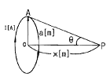
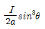
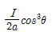
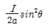
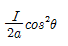
(정답률: 65%)

2. 비투자율 μs=4인 자성체 내에서 주파수 1[GHz]인 전자기파의 파장[m]은?
- 0.1
- 0.15
- 0.25
- 0.4
(정답률: 60%)
3. 그림과 같은 회로 C에 전류 I[A]가 흐를 때 C의 미소부분 dl에 의하여 거리 r만큼 떨어진 P점에서의 자계의 세기 dH[AT/m]는? (단, θ는 dl과 거리 r이 이루는 각이다.)
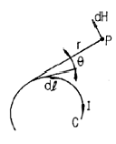
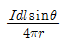
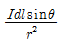
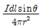
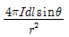
(정답률: 57%)
4. 유전율 ℇ, 투자율 μ인, 매질 중을 주파수 f[㎐]의 전자파가 전파되어 나갈 때의 파장은 몇 [m]인가?
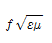
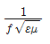
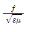
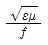
(정답률: 79%)
5. 회로가 닫혀있는 코일 1과 개방된 코일 2가 그림과 같이 평등 자계와 직각방향으로 서로 나란한 코일면을 유지하고 있을 때, 평등 자계의 자속이 일정한 비율로 감소하는 경우 다음 설명 중 옳은 것은?
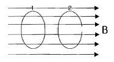
- 유기 기전력은 두 코일에 모두 유기된다.
- 유기 기전력은 개방된 코일 2에만 유기된다.
- 두 코일에 같은 줄열이 발생한다.
- 줄열은 어느 쪽도 발생하지 않는다.
(정답률: 75%)
6. 반지름 10cm인 도체구 A에 9[C]의 전하가 분포되어 있다 이 도체구에 반지름 5cm인 도체구 B를 접촉시켰을 때 도체구 B로 이동한 전하는 몇 [C]인가?(오류 신고가 접수된 문제입니다. 반드시 정답과 해설을 확인하시기 바랍니다.)
- 3
- 9
- 18
- 24
(정답률: 45%)
7. 전계 E=i3x2+j2xy2+kx2yz의 div E는 얼마인가?
- -i6x + jxy + kx2y
- i6x + j6xy + kx2y
- -6x - 6xy - x2y
- 6x + 4xy + x2y
(정답률: 73%)
8. 고유저항 p[Ω ㆍ m], 한변의 길이가 r[m]인 정육면체의 저항[Ω]은?
- p/πr
- πr2/√p
- p/r
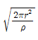
(정답률: 69%)
9. 정전용량이 1[㎌], 2[㎌]인 콘덴서에 각각 2×10-4[C] 및 3×10-4[C]의 전하를 주고 극성을 같게 하여 병렬로 접속할 때 콘덴서에 축적된 에너지는 약 몇 [J]인가?
- 0.042
- 0.063
- 0.084
- 0.126
(정답률: 53%)
10. 유전체에서 변위전류를 발생하는 것은?
- 분극전하밀도의 시간적 변화
- 분극전하 밀도의 공간적 변화
- 자속 밀도의 시간적 변화
- 전속 밀도의 시간적 변화
(정답률: 52%)
11. 두 개의 똑같은 작은 도체구를 접촉하여 대전시킨 후 1[m] 거리에 떼어 놓았더니 작은 도체구는 서로 9×10-3[N]의 힘으로 반발했다. 각 전하는 몇 [C]인가?
- 10-8
- 10-6
- 10-4
- 10-2
(정답률: 74%)
12. 강자성체의 자화에 관한 설명으로 틀린 것은?
- 강자성체의 자화의 세기는 자계의 세기에 비례한다.
- 강자성체에 자계를 변화시키면 히스테리시스 현상이 나타난다.
- 강자성체의 히스테리시스손은 히스테리시스 곡선의 면적과 같다.
- 강자성체의 자속밀도 B는 자계의 세기 H에 비례하지 않는다.
(정답률: 34%)
13. 축이 무한히 길고 반지름이 a[m]인 원주 내에 전하가 축대칭이며, 축방향으로 균일하게 분포되어 있을 경우, 반지름 r ( > a )[m] 되는 동심 원통면상 외부의 일점 P의 전계의 세기는 몇 [V/m]인가?
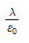
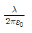
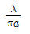
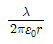
(정답률: 72%)
14. 전기기계기구의 자심재료로 규소 강판을 사용하는 이유는?
- 동손을 줄이기 위해
- 와류손을 줄이기 위해
- 히스테리시스손을 줄이기 위해
- 제작을 쉽게 하기 위해
(정답률: 75%)
15. 자기 회로에서 단면적, 길이 투자율을 모두 1/2로 하면 자기 저항은 어떻게 되는가?
- 1/2로 된다.
- 2배로 된다.
- 4배로 된다.
- 8배로 된다.
(정답률: 62%)
16. 비투자율 μs, 길이 l인 철심에 권수 N인 환상 솔레노이드 코일이 있다. 이 철심에 길이 l1인 미소 공극을 만들었을 때 공극 자계 세기 HA와 철심 자계 세기 HF의 비 (HF/HA)는?
- μs
- 1/μs
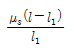
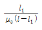
(정답률: 52%)
17. 평행판 콘덴서의 판 사이에 비유전율 ℇs의 유전체를 삽입하였을 때의 정전용량은 진공일 때 보다 어떻게 되는가?
- ℇs배로 증가
- πℇs배로 증가
- 1/ℇs로 감소
- (ℇs+1)배로 증가
(정답률: 76%)
18. 공기 중에 고립하고 있는 지름 3cm의 구도체의 전위를 몇[kV]이상으로 하면 구 표면의 공기가 절연파괴 되는가? (단, 공기의 절연내력은 3 kV/mm라 한다.)
- 15
- 30
- 45
- 60
(정답률: 52%)
19. 전위 계수에 대한 설명 중 틀린 것은?
- 도체 주위의 매질에 따라 정해지는 상수이다.
- 도체의 크기와는 관계가 없다.
- 전위 계수는 도체 상호간의 배치 상태에 따라 정해지는 상수이다.
- 전위 계수의 단위는 [1/F]이다.
(정답률: 57%)
20. 전기력선의 기본 성질을 설명한 것 중 옳지 않은 것은?
- 전기력선의 방향은 그 점의 전계의 방향과 일치한다.
- 전기력선은 전위가 높은 곳에서 낮은 곳으로 향한다.
- 전기력선은 그 자신만으로도 폐곡선이 된다.
- 전기력선은 전계의 세기가 0인 곳을 제외하고는 등전위면과 직교한다.
(정답률: 80%)
2과목: 전력공학
21. 그림과 같은 수전단 전력원선도가 있다. 부하직선을 참고하여 다음 중 전압 조정을 위한 조상설비가 없어도 정전압 운전이 가능한 부하전력은 대략 어느 정도일 때인가?
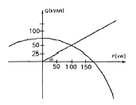
- 무부하일 때
- 50kW일 때
- 100kW일 때
- 150 kW 일때
(정답률: 66%)
22. 같은 전력을 수송하는 배전선로에서 다른 조건은 현상태로 유지하고 역률만을 개선할 때의 효과로 기대하기 어려운 것은?
- 배전선의 손실 저감
- 설비 용량의 여유 증가
- 전압 강하의 경감
- 고조파의 경감
(정답률: 59%)
23. 송전전력, 송전거리, 전선의 비중 및 전력 손실률이 일정 하다고 할 때, 전선의 단면적 A[mm2]와 송전전압 V[kV]의 관계로 옳은 것은?
- A ∝ V
- A ∝√V
- A ∝ 1/V2
- A ∝ V2
(정답률: 58%)
24. 차단기와 차단기의 소호 매질로서 연결이 잘못된 것은?
- 공기 차단기-압축공기
- 가스 차단기-SF6가스
- 진공 차단기-전자력
- 유입 차단기-절연유
(정답률: 80%)
25. 수전용 변전설비의 1차측에 설치하는 차단기의 용량은 어느 것에 의하여 정하는가?
- 수전전력과 부하율
- 수전계약 용량
- 공급측 전원의 단락용량
- 부하설비 용량
(정답률: 76%)
26. 소호 리액터 접지 계통에서 리액터의 탭을 완전 공진 상태에서 약간 벗어나도록 하는 이유는?
- 전력 손실을 줄이기 위해
- 선로의 리액턴스분을 감소시키기 위해
- 접지 계전기의 동작을 확실하게 하기 위하여
- 직렬 공진에 의한 이상 전압의 발생을 방지하기 위하여
(정답률: 67%)
27. 수전단 전압 66000V, 전류 200A, 선로저항 10[Ω], 선로 리액턴스 15[Ω]인 3상 단거리 송전선로의 전압 강하율은 약 몇%인가? (단, 수전단 역률은 0.8이다.)(오류 신고가 접수된 문제입니다. 반드시 정답과 해설을 확인하시기 바랍니다.)
- 7.83
- 8.92
- 9.01
- 9.45
(정답률: 61%)
28. 다음 중 통신선에 대한 유도장해가 가장 큰 배전 계통의 접지 방식은?
- 소호 리액터 접지
- 저항 접지
- 비접지
- 직접 접지
(정답률: 63%)
29. 선로 정수를 전체적으로 평형되게 하고 근접 통신선에 대한 유도 장해를 줄일 수 있는 방법은?
- 딥(dip)을 준다.
- 연가를 한다.
- 복도체를 사용한다.
- 소호 리액터 접지를 한다.
(정답률: 78%)
30. 반지름 15[mm]의 ACSR로 구성된 완전 연가된 3상 1회선 송전 선로가 있다. 각 상간의 등가 선간 거리가 3000[mm]라고 할 때, 이 선로의 [km]당 작용 인덕턴스는 몇 [mH/km]인가?
- 1.43
- 1.11
- 0.65
- 0.33
(정답률: 57%)
31. 설비 A가 150kW, 수용률 0.5, 설비 B가 250kW, 수용률 0.8일 때, 합성 최대 전력이 235kW이면, 부등률은 약 얼마인가?
- 1.10
- 1.13
- 1.17
- 1.22
(정답률: 69%)
32. 다음 중 경수감속 냉각형 원자로에 속하는 것은?
- 비등수형 원자로
- 고속 증식로
- 열중성자로
- 흑연감속 가스 냉각로
(정답률: 69%)
33. 부하의 선간전압 3300V, 피상전력 330kVA, 역률 0.7인 3상 부하가 있다. 부하의 역률을 0.85로 개선하는데 필요한 전력용 콘덴서의 용량은 약 몇 [kVA]인가?
- 63
- 73
- 83
- 93
(정답률: 54%)
34. 정상적으로 운전하고 있는 전력계통에서 서서히 부하를 조금씩 증가 했을 경우 안전 운전을 지속할 수 있는가 하는 능력을 무엇이라 하는가?
- 동태 안정도
- 정태 안정도
- 고유 과도 안정도
- 동적 과도 안정도
(정답률: 73%)
35. 그림과 같은 단상 3선식 배전선로에서 100V, 100W 전등을 AN간에 병렬로 5등, BN간에 병렬로 4등이 연결되어 운전하던 중 중성선이 단선되었다. 이때 AN간의 부하전압 VAN은 몇 [V]인가? (단, 선로는 저항뿐이고 부하까지 1선당 2.5[Ω]이다.)
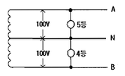
- 80
- 100
- 120
- 140
(정답률: 38%)
36. 수력발전소의 댐 설계 및 저수지 용량 등을 결정하는데 가장 적합하게 사용되는 것은?
- 유량도
- 유황곡선
- 수위-유량곡선
- 적산 유량곡선
(정답률: 62%)
37. 반한시성 과전류 계전기의 전류-시간 특성에 대한 설명 중 옳은 것은?
- 계전기 동작시간은 전류값의 크기와 비례한다.
- 계전기 동작시간은 전류의 크기와 관계없이 일정하다.
- 계전기 동작시간은 전류값의 크기와 반비례한다.
- 계전기 동작시간은 전류값의 크기의 제곱에 비례한다.
(정답률: 65%)
38. 송전선에 댐퍼를 설치하는 주된 목적은?
- 전선의 진동방지
- 전자유도 감소
- 코로나의 방지
- 현수애자의 경사 방지
(정답률: 79%)
39. 송전계통에서 이상전압의 방지대책으로 볼 수 없는 것은?
- 철탑 접지저하의 저감
- 가공 송전선로의 피뢰용으로서의 가공지선에 의한 뇌차폐
- 기기 보호용으로서의 피뢰기 설치
- 복도체 방식 채택
(정답률: 62%)
40. 보일러에서 흡수열량이 가장 큰 것은?
- 수냉벽
- 보일러 수관
- 과열기
- 절탄기
(정답률: 73%)
3과목: 전기기기
41. 슬립 6[%]인 유도 전동기의 2차측 효율[%]은?
- 94
- 84
- 90
- 88
(정답률: 72%)
42. 권수비 10:1인 동일정격 3대의 변압기를 Y-△로 결선하여 2차 단자에 200[V], 75[kVA]의 평형부하를 걸었을 때 각 변압기의 1차 권선의 전류[A] 및 1차 선간전압[V]은? (단, 여자전류와 임피던스는 무시한다.)
- 21.6[A], 2000[V]
- 12.5[A], 2000[V]
- 21.6[A], 3464[V]
- 12.5[A], 3464[V]
(정답률: 35%)
43. 3상 교류 발전기의 기전력에 대하여 π/2[rad]뒤진 전기자 전류가 흐르면 전기자 반작용은?
- 횡축 반작용을 한다.
- 교차 자화작용을 한다.
- 증자 작용을 한다.
- 감자 작용을 한다.
(정답률: 76%)
44. 용량 P[kVA]인 동일 정격의 단상 변압기 4대로 낼 수 있는 3상 최대 출력 용량은?
- 3P
- √3P
- 4P
- 2√3P
(정답률: 60%)
45. 직류 분권 전동기와 권선형 유도전동기와의 유사한 점은?
- 토크가 전압에 비례하며 속도 변동률이 크다.
- 기동 토크가 기동 전류에 비례하며 속도가 변하지 않는다.
- 저항으로 속도 조정이 되며 속도 변동률이 작다.
- 정류자가 있으며 저항으로 속도 조정이 가능하다.
(정답률: 42%)
46. 변압기유 열화방지 방법 중 틀린 것은?
- 개방형 콘서베이터
- 수소봉입 방식
- 밀봉방식
- 흡착제 방식
(정답률: 69%)
47. 내분권 가동복권 발전기의 단자전압 V는 얼마인가? (단, øs[Wb] : 직권 계자권선에 의한 자속, øf[Wb] : 분권 계자의 자속, Ra[Ω] : 전기자 권선 저항, Rs[Ω] : 직권계자 권선 저항, Ia[A] : 전기자 전류, I[A] : 부하전류, n[rps] : 속도, k = PZ/a이고, 자기 회로의 포화 현상과 전기자 반작용은 무시한다.)
- V = k(øf + øs)n - IaRa - IRs[V]
- V = k(øf - øs)n - IaRa - IRs[V]
- V = k(øf + øs)n - Ia(Ra - Rs)[V]
- V = k(øf - øs)n - Ia(Ra - Rs)[V]
(정답률: 45%)
48. 권선형 유도전동기 2대를 직렬종속으로 운전하는 경우의 속도는?
- 두 전동기 극수의 합을 극수로 하는 전동기의 동기속도이다.
- 두 전동기 중 큰 극수를 갖는 전동기의 동기속도이다.
- 두 전동기 중 적은 극수를 갖는 전동기의 동기속도이다.
- 두 전동기 극수의 차를 극수로 하는 전동기의 동기속도이다.
(정답률: 65%)
49. 유도 전동기의 특성에 관한 설명으로 옳은 것은?
- 최대토크는 2차 저항과 반비례한다.
- 최대토크는 슬립과 반비례한다.
- 발생토크는 전압의 2승에 반비례한다.
- 발생토크는 전압의 2승에 비례한다.
(정답률: 50%)
50. 전기자 지름 0.2[m]의 직류 발전기가 출력 28[kW]의 출력에서 900[rpm]으로 회전하고 있을 때 전기자 주변속도는 약 몇 [m/sec]인가?
- 9.42
- 10.96
- 16.74
- 21.85
(정답률: 59%)
51. 3상 동기발전기의 매극 매상의 슬롯수를 3이라고 하면 분포계수는?
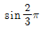
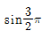
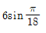
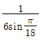
(정답률: 68%)
52. 정류자형 주파수 변환기의 구조에 관한 설명 중 틀린 것은?
- 소용량의 것으로 가장 간단한 것은 회전자만 있고 고정자는 없다.
- 회전자는 3상 회전변류기의 전기자와 거의 같은 구조이며 정류자와 3개의 슬립링이 있다.
- 자기회로의 자기저항을 감소시키기 위해 성층 철심만으로 권선이 없는 고정자를 설치한 것도 있다.
- 용량이 큰 것은 정류작용을 좋게 하기 위해 회전자에 보상권선과 보극권선을 설치한 것도 있다.
(정답률: 39%)
53. 스테핑 모터의 설명 중 틀린것은?
- 가속, 감속이 용이하며 정ㆍ역전 변속이 쉽다.
- 위치제어를 할 때 각도 오차가 적고 누적되지 않는다.
- 정지하고 있을 때 그 위치를 유지해 주는 토크가 작다.
- 브러시, 슬립링 등이 없고 부품수가 적다.
(정답률: 47%)
54. 변압기에 사용되는 절연유의 성질이 아닌 것은?
- 절연내력이 클 것
- 인화점이 낮을 것
- 비열이 커서 냉각효과가 클 것
- 절연재료와 접촉해도 화학작용을 미치지 않을 것.
(정답률: 75%)
55. 병렬운전을 하고 있는 두 대의 3상 동기 발전기 사이에 무효순환전류가 흐르는 것은 두 발전기의 기전력이 어떠할 때인가?
- 기전력의 위상이 다를 때
- 기전력의 파형이 다를 때
- 기전력의 주파수가 다를 때
- 기전력의 크기가 다를 때
(정답률: 65%)
56. 반도체 사이리스터에 의한 제어는 어느 것을 변화시키는 것인가?
- 주파수
- 전류
- 위상각
- 최대값
(정답률: 73%)
57. 3상 유도 전동기에 직결된 펌프가 있다. 펌프 출력은 80[kw], 효율 74.6[%], 전동기의 효율과 역률은 94[%] 와 90[%]라고 하면, 전동기의 입력은 약 몇 [kVA] 인가?
- 95.74
- 104.4
- 121.1
- 126.7
(정답률: 36%)
58. 다음 유도 전동기 기동법 중 권선형 유도전동기에 가장 적합한 기동법은?
- Y-△ 기동법
- 기동 보상기법
- 전전압 기동법
- 2차 저항법
(정답률: 62%)
59. 동기기의 안정도 증진법 중 옳은 것은?
- 동기화 리액턴스를 작게 할 것
- 회전자의 플라이휠 효과를 작게할 것
- 역상, 영상 임피던스를 작게 할 것
- 단락비를 작게 할 것
(정답률: 60%)
60. 다음에서 게이트에 의한 턴온(turn-on)을 이용하지 않는 소자는?
- DIAC
- SCR
- GTO
- TRIAC
(정답률: 48%)
4과목: 회로이론
61. 그림에서 전류계는 0.4[A], 전압계 V1은 3[V], V2는 4[V]를 지시했다. 저항 R3의 값[Ω]은? (단, 전류계 및 전압계의 내부저항은 무시한다.)
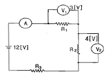
- 5
- 11
- 12.5
- 13.7
(정답률: 55%)
62. 전달함수 응답식 C(s)=G(s)=R(s)에서 입력함수를 단위 임펄스 δ(t)로 가할 때 계의 응답은?
- C(s) = G(s)δ(s)
- C(s) = G(s)/δ(s)
- C(s) = G(s)/s
- C(s) = G(s)
(정답률: 63%)
63. 다음 회로에서 V1=6[V], R1=1[kΩ], R2=2[kΩ]일 때 등가회로로 변환한 회로의 합성저항 Rth[Ω]와 등가전압 Veq[V]는 얼마인가?
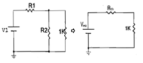
- Rth = 0.67, Veq = 2
- Rth = 0.67, Veq = 4
- Rth = 3,Veq = 2
- Rth =4, Veq = 4
(정답률: 57%)
64. RC 회로의 입력 단자에 계단 전압을 인가하면 출력 전압은?
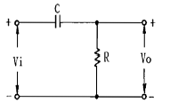
- 0부터 지수적으로 증가한다.
- 처음에는 입력과 같이 변했다가 지수적으로 감쇠한다.
- 같은 모양의 계단 전압이 나타난다.
- 아무 것도 나타나지 않는다.
(정답률: 63%)
65. 전원이 Y결선, 부하가 △결선된 3상 대칭회로가 있다. 전원의 상전압이 220V이고, 전원의 상전류가 10A일 때, 부하 한 상의 임피던스[Ω]는?
- 66
- 22√3
- 22
- 22/√3
(정답률: 43%)
66. Z1=3+j10[Ω], Z2=3-j2[Ω]의 두 임피던스를 직렬로 연결하고 양단에 100∠0[V]의 전압을 가했을 때 Z1, Z2에 걸리는 전압 V1, V2는 각각 얼마인가?
- V1 = 98 + j36, V2 = 2 + j36
- V1 = 98 - j36, V2 = 2 + j36
- V1 = 98 + j36, V2 = 2 - j36
- V1 = 98 - j36, V2 = 2 - j36
(정답률: 49%)
67. 어떤 제어계의 출력이
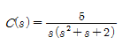
로 주어질 때 출력의 시간함수 c(t)의 정상값은?- 5
- 2
- 2/5
- 5/2
(정답률: 72%)
68. 10t3의 라플라스 변환은?
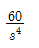
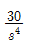
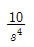
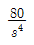
(정답률: 60%)
69. Z = 8 + j6[Ω]인 평형 Y 부하에 선간전압 200[V] 인 대칭 3상 전압을 가할 때 선전류는 약 몇 [A]인가?
- 20
- 11.5
- 7.5
- 5.5
(정답률: 62%)
70. 그림과 같이 10[Ω]의 저항에 감은비가 10:1의 결합회로를 연결했을 때 4단자 정수 A, B, C, D는?
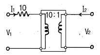
- A=1, B=10, C=0, D=10
- A=10, B=0, C=1, D=1/10
- A= 10, B= 1, C=0, D=1/10
- A=10, B=1, C=1, D=10
(정답률: 57%)
71. 다음과 같은 브리지 회로가 평형이 되기 위한 Z4의 값은?
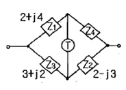
- 2 + j4
- -2 + j4
- 4 + j2
- 4 - j2
(정답률: 65%)
72. 주파수 f[Hz], 단상 교류전압 V[V]의 전원에 저항 R[Ω], 인덕턴스 L[H]의 코일을 접속한 회로가 있을 때, L을 가감해서 R의 전력을 L=0 일 때의 1/5로 하면 L[H]의 크기는?
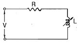
- R2/2πf
- πfR2
- R/πf
- R/2πf
(정답률: 37%)
73. R=10[Ω], L=5[μH]인 RL 직렬회로와 C=100[㎊]인 콘덴서가 병렬로 연결된 회로에서 공진시 공진임피던스[kΩ]는?
- 0.2
- 0.5
- 5
- 200
(정답률: 32%)
74. 그림과 같은 톱니파의 라플라스 변환은?
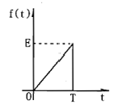
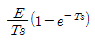
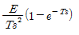
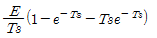
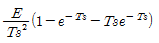
(정답률: 49%)
75. 불평형 3상 전류 Ia=18+j3, Ib=-25-j7,Ic=-5+j10일 때, 영상전류 I0는?
- -12-j6
- 2-j6.24
- 6-j3
- -4+j2
(정답률: 60%)
76. 그림에서 4단자 회로 정수 A, B, C, D 중 출력 단자 3, 4 가 개방되었을 때의 V1/V2인 A의 값은?
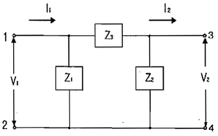
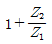
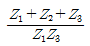
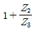
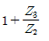
(정답률: 54%)
77. 그림과 같은 회로가 정저항 회로가 되려면 L은 몇[H] 이어야 하는가?(단,R=20[Ω], C=200[㎌]이다.)
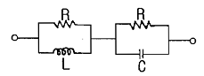
- 0.08
- 0.8
- 1
- 4
(정답률: 59%)
78. 다상 교류회로 설명 중 잘못 된 것은?(단, n=상수)
- 평형 3상 교류에서 Δ결선의 상전류는 선전류의 1/√3과 같다.
- n상전력 이다.
- 성형결선에서 선간전압과 상전압과의 위상차는 이다.
- 비대칭 다상교류가 만드는 회전 자기장은 타원 회전 자기장이다.
(정답률: 54%)
79. 대칭 3상 교류에서 각 상의 전압이 va, vb, vc일 때 3상 전압의 합은?
- 0
- 0.3va
- 0.5va
- 3va
(정답률: 72%)
80. 로 표시되는 비정현파 전류의 실효값은 약 얼마인가?
- 20
- 50
- 114
- 150
(정답률: 67%)
5과목: 전기설비기술기준 및 판단 기준
81. 가공전선로 지지물에 시설하는 통신선으로 적합하지 아니한 것은?
- 통신선은 가공전선의 아래에 시설할 것
- 통신선과 저압 가공전선 사이의 이격거리는 60cm 이상 일 것
- 통신선과 고압 가공전선 사이의 이격거리는 80cm 이상 일 것
- 통신선과 특고압 가공전선 사이의 이격거리는 1.0m 이상 일 것
(정답률: 54%)
82. 전로의 중성점을 접지하는 목적으로 볼 수 없는 것은?
- 전로의 보호 장치의 확실한 동작 확보
- 부하전류의 일부를 대지로 방류하여 전선 절약
- 이상전압의 억제
- 대지전압의 저하
(정답률: 59%)
83. 최대 사용전압이 6600[V]인 3상 유도전동기의 권선과 대지 사이의 절연내력 시험전압은 약 몇 [V]인가?
- 7260
- 7920
- 8250
- 9900
(정답률: 66%)
84. 습기가 있는 장소에서 사용전압이 440[V]인 경우 애자 사용 공사시 전선과 조영재 사이의 이격거리는 최소 몇 [cm]이상이어야 하는가?
- 2.5
- 4.5
- 6
- 8
(정답률: 48%)
85. 중성선 다중 접지한 22.9[kV] 3상 4선식 가공전선로를 건조물의 옆쪽 또는 아래쪽에서 접근 상태로 시설하는 경우 가공 나전선과 건조물의 최소 이격거리[m]는?
- 1.2
- 1.5
- 2.0
- 2.5
(정답률: 35%)
86. 제2종 접지공사에서 접지선의 굵기는 연동선인 경우 몇 [mm2] 이상인가?
- 1.25
- 6
- 8
- 16
(정답률: 45%)
87. 강제 배류기의 시설기준에 대한 설명으로 옳지 않은 것은?
- 귀선에서는 강제 배류기를 거쳐 금속제 지중 관로로 통하는 전류를 저지하는 구조로 할 것
- 강제 배류기를 보호하기 위하여 적정한 과전류 차단기를 시설할 것
- 강제 배류기용 전원장치의 변압기는 절연변압기를 시설하고 1, 2차측 전로에는 개폐기 및 과전류차단기를 각 극에 시설한 것일 것
- 강제 배류기는 제3종 접지공사를 한 금속제 외함 기타 견고한 함에 넣어 시설하거나 사람이 접촉할 우려가 없도록 시설할 것
(정답률: 51%)
88. 전격 살충기는 전격격자가 지표상 또는 마루 위 몇 [m]이상 되도록 시설하여야 하는가?
- 1.5
- 2
- 2.8
- 3.5
(정답률: 47%)
89. 수소냉각식의 발전기, 조상기에 부속하는 수소 냉각 장치에서 필요 없는 장치는?
- 수소의 순도 저하를 경보하는 장치
- 수소의 압력을 계측하는 장치
- 수소의 온도를 계측하는 장치
- 수소의 유량을 계측하는 장치
(정답률: 59%)
90. 과전류차단기로 시설하는 퓨즈 중 고압전로에 사용하는 비포장 퓨즈는 정격전류의 최대 몇 배의 전류에 견디어야 하는가?
- 1.1
- 1.25
- 1.5
- 2
(정답률: 60%)
91. 가공전선로에 사용하는 지지물의 강도 계산시 구성재의 수직 투영면적 1[m2]에 대한 풍압을 기초로 적용하는 갑종풍압하중 값의 기준이 잘못된 것은?
- 목주 : 588Pa
- 원형 철주 : 588Pa
- 철근 콘크리트주 : 1117Pa
- 강관으로 구성된 철탑 : 1255Pa
(정답률: 66%)
92. 사용전압이 25000[V] 이하의 특고압 가공전선로에는 전화선로의 길이 12km 마다 유도전류가 몇 [㎂]를 넘지 아니하도록 하여야 하는가?
- 1.5
- 2
- 2.5
- 3
(정답률: 56%)
93. 저압 가공인입선의 시설에 대한 설명으로 틀린 것은?
- 전선은 절연전선, 다심형 전선 또는 케이블 일 것
- 전선은 지름 1.6mm의 경동선 또는 이와 동등 이상의 세기 및 굵기일 것
- 전선의 높이는 철도 및 궤도를 횡단하는 경우에는 레일 면상 6.5[m] 이상일 것
- 전선의 높이는 횡단보도교의 위에 시설하는 경우에는 노면상 3[m] 이상일 것
(정답률: 51%)
94. 관, 암거 기타 지중전선을 넣는 방호장치의 금속제 부분, 금속제의 전선 접속함 및 지중전선의 피복으로 사용하는 금속체에 시행하는 접지공사의 종류는?(관련 규정 개정전 문제로 여기서는 기존 정답인 3번을 누르면 정답 처리됩니다. 자세한 내용은 해설을 참고하세요.)
- 제1종 접지공사
- 제2종 접지공사
- 제3종 접지공사
- 특별 제3종 접지공사
(정답률: 66%)
95. 지중에 매설된 금속제 수도관로는 각종 접지공사의 접지극으로 사용할 수 있다. 다음 중에서 접지극으로 사용할 수 없는 것은?
- 안지름 75[mm] 이상이고 전기저항값이 3[Ω] 이하인 것
- 안지름 75[mm] 이상이고 전기저항값이 2[Ω] 이하인 것
- 안지름 75[mm]에서 분기한 안지름 50[mm]의 수도관으로 길이가 6[m]이고, 전기저항 값이 3[Ω] 이하인 것
- 안지름 75[mm]에서 분기한 안지름 30[mm]의 수도관으로 길이가 5[m]이내이고, 전기저항 값이 3[Ω] 이하인 것
(정답률: 45%)
96. 분기회로의 시설에서 저압 옥내간선과의 분기점에서 전선의 길이가 몇 [m] 이하인 곳에 개폐기 및 과전류 차단기를 시설하여야 하는가?
- 3
- 4
- 5
- 6
(정답률: 47%)
97. 출퇴표시등 제어회로의 배선을 금속덕트 공사에 의하여 시설하고자 한다. 절연피복을 포함한 전선의 총면적은 덕트 내부 단면적의 몇 [%]까지 할 수 있는가?
- 20
- 30
- 40
- 50
(정답률: 42%)
98. 가공전선로의 지지물에 하중이 가하여지는 경우에 그 하중을 받는 지지물 기초 안전율은 일반적인 경우에 얼마 이상이어야 하는가?
- 1.5
- 2.0
- 2.5
- 3.0
(정답률: 45%)
99. 3상 380[V] 모터에 전원을 공급하는 저압전로의 전선 상호간 및 전로와 대지 사이의 절연저항 값은 몇 [MΩ] 이상이 되어야 하는가?(오류 신고가 접수된 문제입니다. 반드시 정답과 해설을 확인하시기 바랍니다.)
- 0.1
- 0.2
- 0.3
- 0.4
(정답률: 52%)
100. 특고압 지중전선이 가연성이나 유독성의 유체(流體)를 내포하는 관과 접근하기 때문에 상호간에 견고한 내화성의 격벽을 시설하였다. 상호 간의 이격거리가 몇 [m] 이하인 경우인가?
- 0.4
- 0.6
- 0.8
- 1.0
(정답률: 50%)
B = μ₀I/2a * sinθ
여기서 μ₀는 자유공기의 유전율이고, I는 전류, a는 코일의 반지름, θ는 각 APO이다.
sinθ = x/√(a²+x²)
따라서,
B = μ₀I/2a * x/√(a²+x²)
보기에서 제시된 답 ""은 이 식과 일치한다.